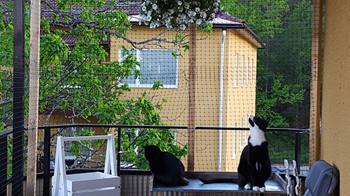

Näta in din balkong
Om du bor i lägenhet och inte kan släppa ut dina katter kan du näta in din balkong så att de kan få vara ute. Det finns olika lösningar beroende på vad du har för balkong samt vilken våning du bor på.
Vi nätade in vår balkong våren 2017. Eftersom vi bor i en bostadsrätt behövde vi bara tillstånd av vår förening så var det att bara köra på. Vi bor på fjärde våningen i ett höghus, högst upp i ett villaområde. Bredvid vår balkong har vi en stor ek där grenarna sträcker sig nästan intill vår balkong. Där brukar det sitta mycket fåglar som är roligt för katterna att spana på.
Det visade sig vara ett ganska stort projekt att näta in balkongen. Som tur var har balkongen både tak och flera järn pålar på flera ställen gick det ändå att näta in. Dock fanns det inget att fästa näten i så vi fick först åka till brädgården och köpa sex stora träpålar. Trä pålarna fick vi sätta fast med metall snören som vi snodde runt metall pålarna och trä pålarna. När vi fått upp alla pålarna kunde vi sätta näten i trä pålarna. Vi hade också buntband som vi satte ihop näten med. Längst ned fick vi sätta plankor så katterna inte kom under. Vi jobbade länge med balkongen och använde mycket nitar att fästa med. Resultatet blev bra och säkert framför allt. Nu vågar jag till och med låta katterna vara ute ensamma på balkongen om jag är iväg och gör ett ärende. De får inte vara ute på vintern eller när det är för kallt ute. Det blir för kallt i lägenheten och jag vill inte att de ska förfrysa sina tassar när det är minusgrader.
Text av Rebeca Sundbaum